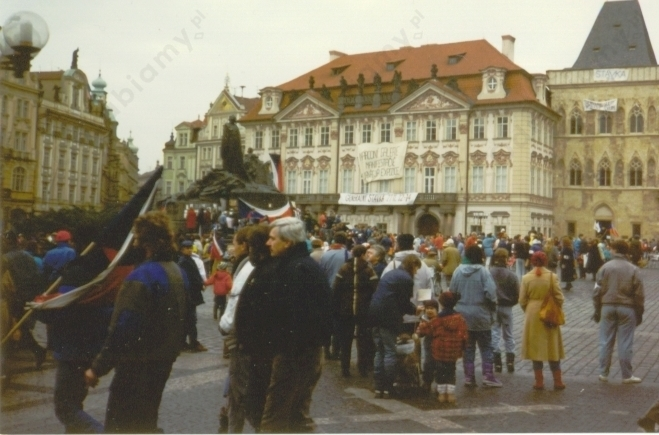

1) Źródła prawa, do których odwoływał się traktat zjednoczeniowy z 12 września 1990 r.:
2) Szczególnie ważnym zapisem traktatu dla Polski był punkt 3 w artykule 1, który dotyczył tego, że zjednoczone Niemcy nie będę miały żadnych roszczeń terytorialnych wobec innych państw oraz artykuł 2 dotyczący dążeń pokojowych w stosunkach międzynarodowych.
Modele prowadzenia transformacji ustrojowych:
- droga pokojowa, tzn. prowadzenie rozmów między opozycją a władzą komunistyczną,
- droga militarna, tzn. przewrót wojskowo-polityczny.
Polska
Czechosłowacja
Węgry:
NRD
Bułgaria
Rumunia
System komunistyczny upadł również w Jugosławii i Albanii.
Aksamitna rewolucja to określenie na wydarzenia mające miejsce w Czechosłowacji w 1989 roku. Ich skutkiem było zlikwidowanie demokracji ludowej i rozpoczęcie transformacji ustrojowej, która sprawiła, że Czechosłowacja wstąpiła na drogę demokracji parlamentarnej. Do przemian ustrojowych w Czechosłowacji doszło na drodze pokojowej, bez rozlewu krwi. Aby podkreślić pokojowość pochodów i manifestacji, demonstranci próbowali wręczać milicjantom kwiaty. Pod wpływem ciągłych demonstracji antykomunistycznych ukształtowało się Forum Obywatelskie w Czechach i Społeczeństwo Przeciwko Przemocy na Słowacji. Kierownictwo Komunistycznej Partii Czechosłowacji podało się do dymisji. Premier Ladislav Adamec zapowiedział powstanie nowego rządu z udziałem przedstawicieli sił demokratycznych.

Demonstranci na Rynku Starego Miasta w Pradze w 1989 r., źródło: Wikimedia Commons.
Kwestia zjednoczenia państw niemieckich (RFN i NRD) powróciła do polityki Republiki Federalnej Niemiec w związku z upadkiem bloku państw komunistycznych. Na fali przemian doszło w październiku 1989 r. do demonstracji w Berlinie Wschodnim. Wkrótce upadł mur berliński, a kanclerz Helmut Kohl ogłosił plan zjednoczenia. 1 lipca 1990 r. zawarto układ o unii walutowej, gospodarczej i socjalnej między krajami niemieckimi. 12 września 1990 r. w Moskwie na konferencji 2+4 (mocarstwa zachodnie, ZSRR i kraje niemieckie) uregulowano sprawy zagraniczne i kształt granic nowego państwa niemieckiego. Ostatecznie 20 września 1990 r. podpisano traktat zjednoczeniowy pomiędzy RFN a NRD. Landy NRD w dniu 3 października 1990 r. przystąpiły do RFN.
Znaczenie przemian politycznych w NRD dla kształtu współczesnej Europy: